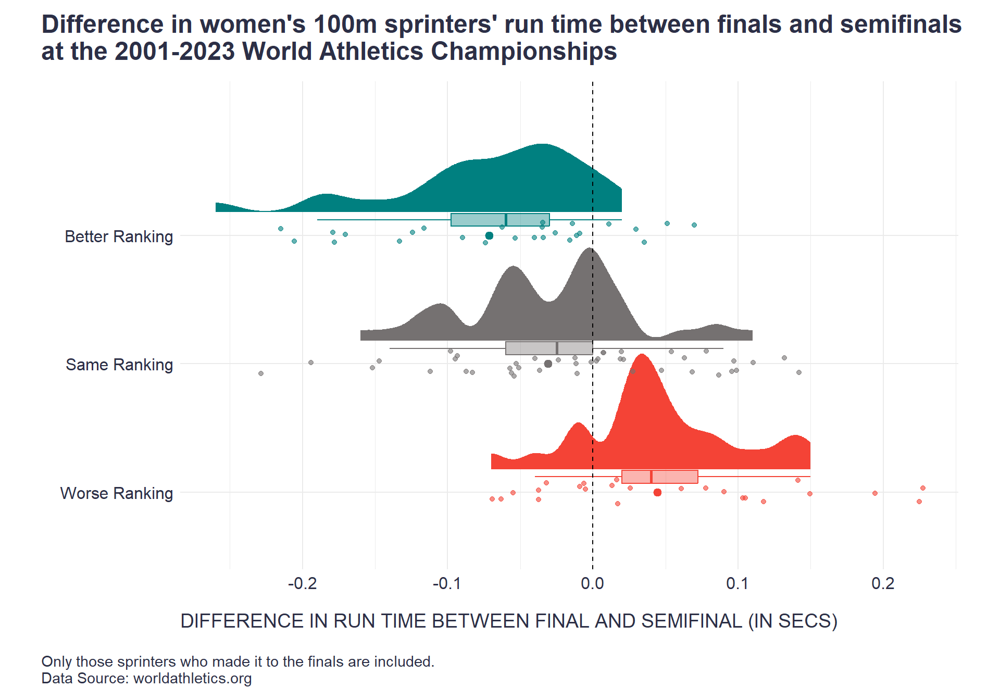

How surprising was Sha’Carri Richardson’s victory in the women’s 100m race at the World Athletics Championships in Budapest 2023? Let’s check it out with some data.
I just finished watching Netflix’s excellent sport documentary Sprint, which shows the ups and downs of several top male and female sprinters during their 2023 season.
In the final episode, while discussing Sha’Carri Richardson’s victory in the women’s 100m race at the World Athletics Championships in Budapest 2023, the reporter highlighted how surprising and exceptional her win was, especially considering she did not qualify directly for the final (i.e., by being among the top two in one of the semifinals).
The data enthusiast in me felt compelled to investigate just how surprising this achievement truly was. So, I examined the data from the women’s 100m finals and semifinals at all World Athletics Championships from 2001 to 2023, and used a slopegraph and a multilevel Spearman’s rank correlation to analyze the consistency of finalists’ rankings across the finals and semis.
As the plot below illustrates, the consistency is relatively high (r = 0.8), but it’s not absolute, which leaves room for some surprising wins, which are rare but not impossible. However, in Sha’Carri’s case, imho, her victory doesn’t seem particularly surprising in light of the available data, as she moved “only” from third place in the semis to first in the final (which, of course, doesn’t make her victory any less remarkable).
# uploading libraries
library(tidyverse)
library(correlation)
# uploading data for female sprinters
data <- readxl::read_xlsx('sprint_data.xlsx', sheet = 'female_100m')
mydata <- data %>%
dplyr::select(-name) %>%
dplyr::mutate(event = as.factor(event))
# computing multilevel Bayesian Pearson correlation analysis
c <- correlation::correlation(
mydata,
include_factors = TRUE,
method = "spearman",
multilevel = TRUE,
bayesian = FALSE,
ci = 0.99
)
# extracting correlation estimates
Spearman_r = c[1,3]
CI95L = c[1,4]
CI95H = c[1,5]
# preparing data for dataviz via slopegraph
dataviz_data <- data %>%
dplyr::mutate(event = as.factor(event)) %>%
dplyr::group_by(event) %>%
dplyr::mutate(
final_rank = rank(time_seconds_final, ties.method = "min", na.last = "keep"),
semifinal_rank = rank(time_seconds_semifinal, ties.method = "min", na.last = "keep"),
) %>%
dplyr::ungroup() %>%
dplyr::mutate(
athlete = row_number(),
group = ifelse(final_rank < semifinal_rank, 'better', ifelse(final_rank > semifinal_rank, 'worse', 'same'))
) %>%
tidyr::pivot_longer(
cols = c(final_rank, semifinal_rank),
names_to = "stage",
values_to = "rank"
) %>%
dplyr::mutate(
highlight = ifelse(name=="Sha'Carri RICHARDSON" & event == 'World Athletics Championships, Budapest 2023', TRUE, FALSE)
)
# jitter function for slopegraph
jitter_width <- 0.25
jitter_fn <- function(x) x + runif(length(x), -jitter_width, jitter_width)
# creating the slopegraph
ggplot2::ggplot(dataviz_data, aes(x = stage, y = rank, group = athlete, color = group)) +
# Plot non-highlighted lines first
ggplot2::geom_line(data = dataviz_data %>% filter(!highlight),
aes(y = jitter_fn(rank)),
alpha = 0.4, size = 1) +
# Plot highlighted line separately to ensure it is on top
ggplot2::geom_line(data = dataviz_data %>% filter(highlight),
aes(y = jitter_fn(rank)),
alpha = 1, size = 1.5, color = 'black', linetype='dashed') +
# Define custom x-axis settings
ggplot2::scale_x_discrete(
position = "bottom",
expand = c(0.03, 0.03),
limits = c("semifinal_rank", "final_rank"),
labels = c("semifinal_rank" = "Semifinal Ranking", "final_rank" = "Final Ranking")
) +
ggplot2::scale_color_manual(
values = c('worse'='#F44336', 'same'='#757171', 'better'='#008080'),
labels = c('worse'='Worse Ranking', 'same'='Same Ranking', 'better'='Better Ranking')
) +
# Define y-axis settings
ggplot2::scale_y_reverse(
breaks = seq(1, 10, by = 1),
sec.axis = dup_axis(name = NULL)
) +
# Add plot labels
ggplot2::labs(
x = NULL,
y = NULL,
color = NULL,
title = "Stability of women's 100m sprinters' rankings across finals and semifinals\nat the 2001-2023 World Athletics Championships",
subtitle = stringr::str_glue("Multilevel Spearman rank correlation = {round(Spearman_r,2)}; 99% CI: [{round(CI95L,2)}, {round(CI95H,2)}]"),
caption = "\nOnly those sprinters who made it to the finals are included, and the semifinal rankings are based on all semifinalists.\nThe highlighted line corresponds to Sha'Carri Richardson's victory in the women's 100m at the 2023 World Championships in Budapest.\nData Source: worldathletics.org"
) +
ggplot2::theme_minimal() +
ggplot2::theme(
plot.title = element_text(color = '#2C2F46', face = "bold", size = 18, margin = margin(0, 0, 12, 0)),
plot.subtitle = element_text(color = '#2C2F46', face = "plain", size = 14, margin = margin(0, 0, 12, 0)),
plot.caption = element_text(color = '#2C2F46', face = "plain", size = 11, hjust = 0),
panel.grid = element_blank(),
axis.ticks = element_blank(),
axis.text.x = element_text(size = 14, color = '#2C2F46', hjust = c(0, 1)),
axis.text.y = element_text(size = 12, color = '#2C2F46'),
plot.margin = margin(t = 10, r = 30, b = 10, l = 30),
plot.title.position = "plot",
plot.caption.position = "plot",
legend.position = "top",
legend.margin = margin(0, 0, 0, 0),
legend.box.margin = margin(0, 0, -10, 0) ,
legend.text = element_text(size = 12, color = '#2C2F46'),
plot.background = element_rect(fill = "white", color = NA),
panel.background = element_rect(fill = "white", color = NA)
) +
ggplot2::guides(color = guide_legend(override.aes = list(linewidth = 5))) We could also ask how those who improved their rankings achieved this. Was it because they ran faster, or was it that their competitors ran slower in the final compared to the semis? A comparison of time differences between the finals and semis for those who improved, worsened, or maintained their ranking suggests that it’s a combination of both. Those who improved or maintained their rankings tended to improve their times in the final, though the former group did so more significantly. Conversely, those who dropped in ranking generally ran slower in the final in comparison with the semi.
# uploading library
library(ggdist)
# preparing data for dataviz
compa_data <- data %>%
dplyr::mutate(event = as.factor(event)) %>%
dplyr::group_by(event) %>%
dplyr::mutate(
final_rank = rank(time_seconds_final, ties.method = "min", na.last = "keep"),
semifinal_rank = rank(time_seconds_semifinal, ties.method = "min", na.last = "keep"),
) %>%
dplyr::ungroup() %>%
dplyr::mutate(
athlete = row_number(),
group = ifelse(final_rank < semifinal_rank, 'Better Ranking', ifelse(final_rank > semifinal_rank, 'Worse Ranking', 'Same Ranking')),
group = relevel(factor(group), ref = "Same Ranking"),
diff = time_seconds_final - time_seconds_semifinal
)
# raincloud plot
ggplot2::ggplot(
compa_data %>% mutate(group = factor(group, levels = c('Better Ranking', 'Same Ranking', 'Worse Ranking'))),
aes(x = diff, y = fct_rev(group), color = group, fill = group)) +
ggdist::stat_halfeye(
adjust = 0.5,
justification = -0.2,
.width = 0,
point_interval = "mean_qi"
) +
ggplot2::geom_jitter(
aes(color = group), # Add jittered raw data points
width = 0.1, height = 0.1, alpha = 0.6
) +
ggplot2::geom_boxplot(
aes(color = group), # Add a boxplot
width = 0.1, outlier.shape = NA, alpha = 0.4, position = position_nudge(y = 0.12)
) +
ggplot2::geom_vline(xintercept = 0, linetype='dashed') +
ggplot2::scale_color_manual(
values = c('Worse Ranking'='#F44336', 'Same Ranking'='#757171', 'Better Ranking'='#008080')
) +
ggplot2::scale_fill_manual(
values = c('Worse Ranking'='#F44336', 'Same Ranking'='#757171', 'Better Ranking'='#008080')
) +
ggplot2::labs(
title = "Difference in women's 100m sprinters' run time between finals and semifinals\nat the 2001-2023 World Athletics Championships",
x = "DIFFERENCE IN RUN TIME BETWEEN FINAL AND SEMIFINAL (IN SECS)",
y = "",
caption = "\nOnly those sprinters who made it to the finals are included.\nData Source: worldathletics.org"
) +
ggplot2::theme_minimal() +
ggplot2::theme(
plot.title = element_text(color = '#2C2F46', face = "bold", size = 18, margin = margin(0, 0, 12, 0)),
plot.subtitle = element_text(color = '#2C2F46', face = "plain", size = 14, margin = margin(0, 0, 12, 0)),
plot.caption = element_text(color = '#2C2F46', face = "plain", size = 11, hjust = 0),
axis.title.x = element_text(color = '#2C2F46', face = "plain", size = 14, hjust = 0, margin = margin(15, 0, 0, 0)),
axis.text.x = element_text(size = 12, color = '#2C2F46'),
axis.text.y = element_text(size = 12, color = '#2C2F46'),
plot.margin = margin(t = 10, r = 30, b = 10, l = 30),
plot.title.position = "plot",
plot.caption.position = "plot",
plot.background = element_rect(fill = "white", color = NA),
panel.background = element_rect(fill = "white", color = NA),
legend.position = ''
)
Not sure if there are any deeper lessons to be drawn from these results, perhaps just that while patterns and predictability exist, there is always room for surprises, the awareness of which can help nurture resilience and flexibility, key qualities for navigating uncertain environments. But maybe I just have a limited imagination, so feel free to share any suggestions for a better lesson 🙂
What I am 100% sure of, though, is that I enjoyed playing with the data a lot. If you’d like to play with them yourself, you can copy them for both women and men from the two tables below.
library(DT)
DT::datatable(
data,
class = 'cell-border stripe',
filter = 'top',
extensions = 'Buttons',
fillContainer = FALSE,
rownames= FALSE,
options = list(
pageLength = 5,
lengthMenu = c(5, 10, 15, 25),
autoWidth = TRUE,
dom = 'Blfrtip',
buttons = c('copy', 'excel', 'csv'),
scrollX = TRUE,
scrollY = TRUE
)
)data_males <- readxl::read_xlsx('sprint_data.xlsx', sheet = 'male_100m')
DT::datatable(
data_males,
class = 'cell-border stripe',
filter = 'top',
extensions = 'Buttons',
fillContainer = FALSE,
rownames= FALSE,
options = list(
pageLength = 5,
lengthMenu = c(5, 10, 15, 25),
autoWidth = TRUE,
dom = 'Blfrtip',
buttons = c('copy', 'excel', 'csv'),
scrollX = TRUE,
scrollY = TRUE
)
)